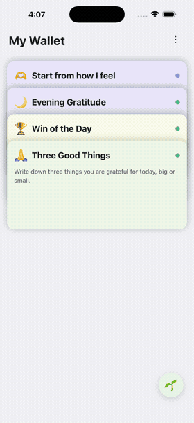

Hi there,
Tap the seedling, log where you're at, and watch your own trend build over time.
You choose what getting better means to you, then the daily check-in tracks how you're doing against your own measure — and it folds into your Insights over time.